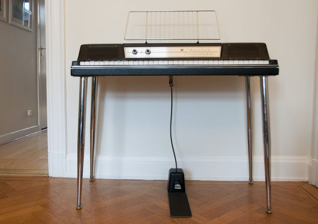

Scheda 052 · 1968 · DeKalb, Illinois
Wurlitzer 200A
Una lamella d'acciaio da 6 millimetri, colpita da un martelletto. Se la picchi forte, abbaia
Il piano elettrico che non ha corde e nemmeno i rebbi del Rhodes: dentro ha delle linguette, come un'armonica a bocca.
Il suono vero · 0:21
Un piano elettrico Wurlitzer della serie 200.
0:00 / 0:21
Registrazione di Ritchie333 · CC BY-SA 4.0 · Wikimedia Commons · estratto di 21 s, volume normalizzato
- MODELLO 200
- 1968
- MODELLO 200A
- 1974
- TASTI
- 64
- PESO
- 25 kg senza gambe
La macchinaChe cos'è
Sembra una valigia nera su quattro gambe di metallo, con due manopole sole e gli altoparlanti nel coperchio. Dentro non ci sono corde: ogni tasto alza un martelletto che colpisce una lamella d'acciaio piatta, lunga qualche centimetro. I tasti sono 64 e pesa 25 chili senza le gambe, che è poi il motivo per cui esiste. Sul pannello c'è una manopola scritta «vibrato» che vibrato non fa: muove il volume, non l'altezza, quindi è un tremolo. L'etichetta è sbagliata da sempre e nessuno l'ha mai corretta.
Chi l'ha costruitaBenjamin Miessner
Miessner era un ingegnere radio, e nel 1932 presenta un pianoforte a coda con dentro un pickup elettrostatico: le corde ci sono ancora, l'amplificatore le raccoglie. Poi negli anni Cinquanta gli viene l'idea che cambia tutto. Via le corde, al loro posto delle lamelle d'acciaio: una lamella non tira come una corda, quindi non serve un telaio che regga le tonnellate, e lo strumento si può fare piccolo. La Wurlitzer costruisce il primo nel 1954 e va avanti fino al 1983.
Come funzionaCosa c'è dentro
La lamella sta a un capello di distanza da una placchetta di metallo, e fra le due c'è una tensione di 170 volt. Quando la lamella vibra, la distanza cambia, e cambiando cambia anche la carica: quella variazione è il segnale. Non è una bobina come sul Rhodes o sulla chitarra elettrica, è un condensatore che respira. Una cosa che a me nessuno aveva spiegato: il timbro sporco delle note basse non è un difetto dell'amplificatore, è la lamella che sotto un colpo forte si piega troppo e distorce da sola.
Chi l'ha usataNei dischi
- Ray Charles«What'd I Say» (1959), su un modello 120 più vecchio
- Joe Zawinul«Mercy, Mercy, Mercy» (1966), su un 140B
- Supertramp«Dreamer» e «The Logical Song»: quasi tutto il loro suono
- John Deacon«You're My Best Friend» dei Queen (1975), scritta su questo
Da ascoltare
Queen, «You're My Best Friend» (1975)
Le note basse dell'introduzione sono tutta lamella: ascoltate come si sporcano quando il tasto viene giù forte.
L'aneddotoUna storia
John Deacon voleva scrivere qualcosa con un Wurlitzer, ma il pianista dei Queen era Freddie Mercury e Mercury non ne voleva sapere. Le sue parole: mi sono rifiutato di suonare quel coso, è metallico e orribile, perché usarlo quando hai un gran coda. Allora Deacon se lo porta a casa e impara a suonare da solo. Quello che gli esce mentre impara è «You're My Best Friend», che scrive per sua moglie Veronica. Dal vivo la suonavano con Mercury al pianoforte vero e Deacon al basso.
Avvertenze
Dentro ci sono 170 volt fra la lamella e la placchetta. Si accorda limando la lamella, e a strumento spento.
Il carosello · si aprono in grande
Le 6 tavole
Da dove viene
Fonti
- «Wurlitzer electronic piano» — Wikipedia (EN) verificata il 2026-09-29
- «Benjamin Miessner» — Wikipedia (EN) verificata il 2026-09-29
- «You're My Best Friend» — Wikipedia (EN), con le parole di Mercury e di Deacon verificata il 2026-09-29
- «The Story Behind The Queen Song» — uDiscover Music verificata il 2026-09-29
Foto: I99pema · CC BY-SA 4.0 · Wikimedia Commons
Foto nelle tavole: doryfour · CC BY-SA 2.0 · Wikimedia Commons
Foto nelle tavole: I99pema · CC BY-SA 4.0 · Wikimedia Commons
Foto nelle tavole: doryfour · CC BY-SA 2.0 · Wikimedia Commons
Suono: Registrazione di Ritchie333 · CC BY-SA 4.0 · Wikimedia Commons · estratto di 21 s, volume normalizzato